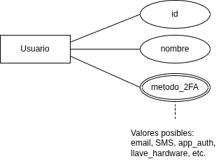
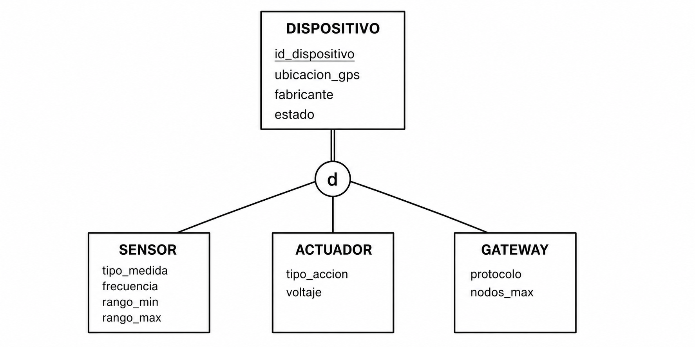
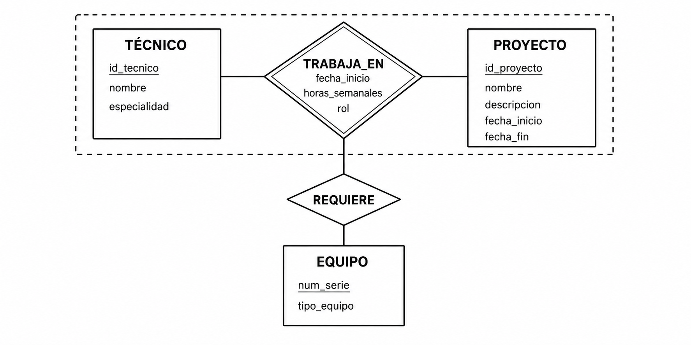

¿Modelo semántico?
¿Modelo semántico?
Un modelo semántico de datos es un modelo conceptual cuyo objetivo es capturar el significado del dominio: qué tipos de cosas existen, qué restricciones impone el mundo real y cómo se relacionan los conceptos, todo antes de pensar en tablas o índices.

¿Modelo semántico?

El modelo relacional plano puede representar cualquier cosa, pero a veces lo hace con dificultad.
Imagínense el archivo de un hospital con una única tabla PERSONA(id, nombre, especialidad, cedula_prof, num_expediente, alergias, turno, area).
¿Modelo semántico?
¿Modelo semántico?

Un modelo semántico resuelve esto con jerarquías, herencia y tipos especializados.
El Modelo Entidad-Relación Extendido (EER)
El Modelo Entidad-Relación Extendido (EER)

El EER (Enhanced Entity-Relationship) es una extensión del E-R clásico desarrollada en los años 1980 por Elmasri y Navathe.
Conserva todos los elementos del E-R básico y agrega cuatro constructores:
El Modelo Entidad-Relación Extendido (EER)
El Modelo Entidad-Relación Extendido (EER)
Notación base
Notación base
Entidades Débiles
Entidades Débiles
Entidades Débiles
Entidades Débiles
Entidades Débiles

LECTURA es débil: su identificación completa requiere id_sensor + timestamp.
Dos sensores distintos pueden generar una lectura en el mismo instante; el timestamp solo no basta.
Entidades Débiles
Atributos Multivaluados
Atributos Multivaluados
Atributos Multivaluados

Ejemplo — autenticación multi-factor:

Atributos Multivaluados

Un usuario puede tener entre cero y varios métodos activos simultáneamente.
Atributos Multivaluados
Distinción: multivaluado vs compuesto
Un atributo compuesto tiene partes con significado propio (dirección → calle, número, colonia).
Un atributo multivaluado tiene múltiples ocurrencias del mismo tipo (teléfono → varios números).
Un atributo puede ser ambas cosas a la vez.

Especialización y Generalización
Especialización y Generalización
Especialización y Generalización
Generalización (bottom-up): se parte de varias entidades con atributos comunes y se factorizan en una nueva superclase.
Ambos producen el mismo resultado en el diagrama: una jerarquía.

Especialización y Generalización

La herencia garantiza que cada subclase adquiere automáticamente todos los atributos y relaciones de su superclase.
Restricciones de la jerarquía

Disjunción — ¿puede una ocurrencia pertenecer a más de una subclase?
d— Disjunta: pertenece a lo sumo a una subclase (vehículo es automóvil o motocicleta).o— Superpuesta: puede pertenecer a varias (un empleado puede ser supervisor y técnico).
Restricciones de la jerarquía
Completitud — ¿Toda ocurrencia de la superclase pertenece a alguna subclase?
- Total (línea doble): toda ocurrencia pertenece a al menos una subclase.
- Parcial (línea simple): algunas ocurrencias pueden no pertenecer a ninguna.

Ejemplo — red de sensores (disjunta, total)


Ejemplo — red de sensores (disjunta, total)

Todo dispositivo es exactamente uno de los tres tipos.
Los atributos comunes se definen una sola vez en la superclase.
Ejercicio

Se diseña la base de datos de una biblioteca universitaria.
Los usuarios son: estudiantes de licenciatura, estudiantes de posgrado, profesores e investigadores externos.
Ejercicio
Algunos profesores también cursan posgrado en la misma institución; algunos investigadores externos son profesores de otra institución.
- ¿Cuál es la superclase?
- ¿La especialización es disjunta o superpuesta?
- ¿Total o parcial?
- Justificar respuestas.

Agregación
Agregación
Agregación
Agregación
Ejemplo — técnicos en proyectos de infraestructura:


Agregación
E-R Simple vs. EER — mismo problema
E-R Simple vs. EER — mismo problema
Dominio: red de sensores en una ciudad inteligente.
En el que se tienen dispositivos de diferentes tipos y de los cuales, los sensores generan lecturas.
Modelo E-R simple
-- Tabla única para todos los tipos de dispositivo
CREATE TABLE dispositivo (
id_disp VARCHAR(20) PRIMARY KEY,
tipo_disp VARCHAR(15) NOT NULL, -- 'sensor' | 'actuador' | 'gateway'
ubicacion_lat DECIMAL(9,6),
ubicacion_lon DECIMAL(9,6),
estado VARCHAR(15),
fabricante VARCHAR(50),
-- atributos de SENSOR (NULL para actuadores y gateways)
tipo_medida VARCHAR(30),
frecuencia_hz FLOAT,
rango_min FLOAT,
rango_max FLOAT,
-- atributos de ACTUADOR (NULL para sensores y gateways)
tipo_accion VARCHAR(30),
voltaje_op FLOAT,
-- atributos de GATEWAY (NULL para sensores y actuadores)
protocolo VARCHAR(20),
nodos_max INTEGER
);
-- Lecturas generadas por cualquier dispositivo
CREATE TABLE lectura (
id_disp VARCHAR(20) REFERENCES dispositivo(id_disp),
ts TIMESTAMP NOT NULL,
valor FLOAT,
unidad VARCHAR(10),
PRIMARY KEY (id_disp, ts)
);Modelo E-R simple
Problemas:
- NULLs masivos,
- restricciones de dominio no expresables,
- extensión obliga a alterar el esquema completo.
Modelo E-R simple
| id_disp | tipo_disp | frecuencia_hz | tipo_accion | protocolo | ... |
|---|---|---|---|---|---|
| S001 | sensor | 1.0 | NULL | NULL | ... |
| A001 | actuador | NULL | abrir_valvula | NULL | ... |
| G001 | gateway | NULL | NULL | LoRa | ... |
Modelo E-R simple
El esquema no impide asignar tipo_accion a un sensor, ni impone que todo sensor tenga frecuencia_hz.
Esas reglas tendrían que implementarse en el código de la aplicación.

Modelo EER equivalente
[DISPOSITIVO]
id_dispositivo · ubicacion_gps
estado · fabricante
║ (total)
───d─── (disjunta)
/ | \
[SENSOR] [ACTUADOR] [GATEWAY]
tipo_medida tipo_accion protocolo
frecuencia voltaje nodos_max
║ (participación total)
<GENERA> ← rombo doble
║
[LECTURA] ← entidad débil
~timestamp~ · valor · unidadModelo EER equivalente

Se generan cinco tablas: una para la superclase y una por cada subclase, más la tabla de lecturas (entidad débil).
Modelo EER equivalente
-- Superclase: atributos comunes a todos los tipos
CREATE TABLE dispositivo (
id_dispositivo VARCHAR(20) PRIMARY KEY,
ubicacion_lat DECIMAL(9,6) NOT NULL,
ubicacion_lon DECIMAL(9,6) NOT NULL,
estado VARCHAR(15) NOT NULL,
fabricante VARCHAR(50),
fecha_inst DATE
);Modelo EER equivalente
-- Subclase SENSOR: solo sus atributos propios + referencia a superclase
CREATE TABLE sensor (
id_dispositivo VARCHAR(20) PRIMARY KEY
REFERENCES dispositivo(id_dispositivo)
ON DELETE CASCADE,
tipo_medida VARCHAR(30) NOT NULL,
frecuencia_hz FLOAT NOT NULL,
rango_min FLOAT,
rango_max FLOAT
);Modelo EER equivalente
-- Subclase ACTUADOR
CREATE TABLE actuador (
id_dispositivo VARCHAR(20) PRIMARY KEY
REFERENCES dispositivo(id_dispositivo)
ON DELETE CASCADE,
tipo_accion VARCHAR(30) NOT NULL,
voltaje_op FLOAT NOT NULL
);Modelo EER equivalente
-- Subclase GATEWAY
CREATE TABLE gateway (
id_dispositivo VARCHAR(20) PRIMARY KEY
REFERENCES dispositivo(id_dispositivo)
ON DELETE CASCADE,
protocolo VARCHAR(20) NOT NULL,
nodos_max INTEGER
);Modelo EER equivalente
-- Entidad débil LECTURA: identificada por (id_dispositivo + ts)
CREATE TABLE lectura (
id_dispositivo VARCHAR(20) NOT NULL
REFERENCES sensor(id_dispositivo)
ON DELETE CASCADE,
ts TIMESTAMP NOT NULL,
valor FLOAT NOT NULL,
unidad VARCHAR(10),
calidad_señal FLOAT,
PRIMARY KEY (id_dispositivo, ts)
);Modelo EER equivalente

Para insertar un sensor se insertan dos filas: primero en dispositivo (atributos comunes), luego en sensor (atributos propios).
Por las restricciones no puede existir una fila en sensor sin su fila correspondiente en dispositivo.
Modelo EER equivalente
Modelo EER equivalente
SELECT d.id_dispositivo, d.ubicacion_lat, d.ubicacion_lon,
s.tipo_medida, s.frecuencia_hz
FROM dispositivo d
JOIN sensor s ON d.id_dispositivo = s.id_dispositivo
WHERE d.id_dispositivo = 'S001';Limitaciones que el EER suaviza
Limitaciones que el EER suaviza
Modelo Conceptual Orientado a Objetos
Modelo Conceptual Orientado a Objetos
Una clase es una plantilla que describe la estructura (atributos) y el comportamiento (métodos) de un conjunto de entidades del dominio.
Modelo Conceptual Orientado a Objetos
Un objeto es una instancia concreta de una clase con un OID (Object Identifier) único asignado automáticamente, independiente del valor de sus atributos.
Dos objetos con los mismos valores en todos sus atributos siguen siendo objetos distintos.
Diagrama de clases UML — notación
┌──────────────────────────┐
│ SENSOR │ ← nombre
├──────────────────────────┤
│ id: String │ ← atributos
│ ubicacion: Coordenada │
│ tipo_medida: String │
│ frecuencia: Float │
├──────────────────────────┤
│ tomar_lectura(): Lectura │ ← métodos
│ calibrar(): void │
└──────────────────────────┘Diagrama de clases UML — notación

Asociaciones (multiplicidad): 1..1, 0..1, 1.., 0..
Herencia: flecha de punta triangular vacía de la subclase hacia la superclase.
Las restricciones se indican con etiquetas: {disjoint}, {overlapping}, {complete}, {incomplete}.
Diferencias EER vs. diagrama de clases
| Aspecto | EER | Diagrama de clases UML |
|---|---|---|
| Comportamiento | No (solo estructura) | Sí (métodos explícitos) |
| Identidad de ocurrencia | Atributo identificador | OID (Object Identifier) |
| Restricciones de jerarquía | Notación integrada (d/o, línea simple/doble) | Etiquetas de texto adicionales |
| Propósito de diseño | Derivar esquemas de BD | Diseño de software o BD OO |
Modelos Semánticos, OO y Objeto-Relacional
El espectro de abstracción
CONCEPTUAL LÓGICO FÍSICO
─────────────────────────────────────────────────
EER / Clases UML → Relacional / → Tablas, índices,
Objeto-relacional almacenamientoLas tres estrategias de mapeo de jerarquías al modelo relacional
Estrategia 1 — Una tabla para toda la jerarquía: todos los atributos de superclase y subclases en una sola tabla con columna discriminante.
Ventaja: sin JOINs.
Desventaja: NULLs masivos.
Las tres estrategias de mapeo de jerarquías al modelo relacional

Estrategia 2 — Tabla de superclase + tabla por subclase: la superclase tiene su tabla; cada subclase tiene la suya con solo sus atributos propios, ligada por el identificador.
Ventaja: normalizado.
Desventaja: JOIN necesario para datos completos.
Las tres estrategias de mapeo de jerarquías al modelo relacional
Estrategia 3 — Solo tablas de subclases: los atributos de la superclase se duplican en cada subclase.
Ventaja: sin JOINs para consultas de subclase.
Desventaja: redundancia y UNION para consultas sobre la superclase.
El modelo objeto-relacional (ORDBMS)

Extiende el motor relacional con capacidades OO sin abandonar su infraestructura.
Extensiones principales:
El modelo objeto-relacional (ORDBMS)
- UDT (User-Defined Types): tipos de dato complejos definidos por el diseñador (
Coordenada,Rango). - Herencia de tablas: una tabla hereda columnas y restricciones de otra.
- Tipos de colección: arreglos y conjuntos como tipo de columna (atributos multivaluados directos).
El modelo objeto-relacional (ORDBMS)
El modelo objeto-relacional (ORDBMS)
PostgreSQL es un ejemplo de sistema objeto-relacional de código abierto.

El modelo objeto-relacional (ORDBMS)
El modelo objeto-relacional (ORDBMS)
-- EER (conceptual)
DISPOSITIVO (id, ubicacion, estado)
├── SENSOR (tipo_medida, frecuencia)
└── ACTUADOR (tipo_accion, voltaje)
SENSOR ─<GENERA>─ LECTURA (débil: timestamp, valor, unidad)
-- Relacional lógico (estrategia 2)
CREATE TABLE dispositivo (id_dispositivo VARCHAR(20) PRIMARY KEY, ...);
CREATE TABLE sensor (id_dispositivo VARCHAR(20) REFERENCES dispositivo, ...);
CREATE TABLE lectura (id_dispositivo VARCHAR(20), ts TIMESTAMP,
PRIMARY KEY (id_dispositivo, ts));
-- Objeto-relacional (PostgreSQL)
CREATE TYPE tipo_coordenada AS (latitud DECIMAL(9,6), longitud DECIMAL(9,6));
CREATE TABLE dispositivo (id_dispositivo VARCHAR(20) PRIMARY KEY,
ubicacion tipo_coordenada, estado VARCHAR(15));
CREATE TABLE sensor (tipo_medida VARCHAR(30), frecuencia_hz FLOAT,
etiquetas TEXT[]) INHERITS (dispositivo);Actividad Central — Red de Sensores
Requisitos del sistema
- Cuatro tipos de dispositivos: sensores de calidad del aire (CO₂, PM2.5, ozono), sensores meteorológicos (temperatura, humedad, presión, viento), actuadores (válvulas, aspersores) y nodos de comunicación (solo retransmiten).
Requisitos del sistema
- Todo dispositivo tiene: identificador único, coordenadas GPS, fecha de instalación, estado.
- Los sensores generan lecturas periódicas con marca de tiempo, valor y unidad. Una lectura solo existe en el contexto de su sensor.

Requisitos del sistema
Requisitos del sistema
Preguntas guía
- Req. 1: ¿Qué constructor EER resuelve los cuatro tipos de dispositivo? ¿Disjunta o superpuesta? ¿Total o parcial?
- Req. 3: ¿Por qué
LECTURAes entidad débil? ¿Cuál es su discriminante?
Preguntas guía
Preguntas guía
- Req. 6: ¿Qué constructor EER permite que la relación dispositivo–responsable participe en otra relación con
ORDEN_DE_TRABAJO? - Req. 7: ¿Cómo se expresa la jerarquía recursiva zona→subzona en el EER?
Entregable
Entregable